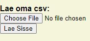

Juhend
1. Samm
Alustuseks tuleks sisestada esimene külg, teine külg ja vajutada Sisesta.


2. Samm
Kui kõik asjad, mis tahtsid sisestada on sisestatud tuleb vajutada Alusta.
3. Samm
Selleks, et kaartides edasi liikuda tuleb vajutada Järgmine.
Valikuline samm
Kui on olemas, enda tabel on ka võimalik seda sisestada. Pärast sisestamist vajutada Lae sisse.
